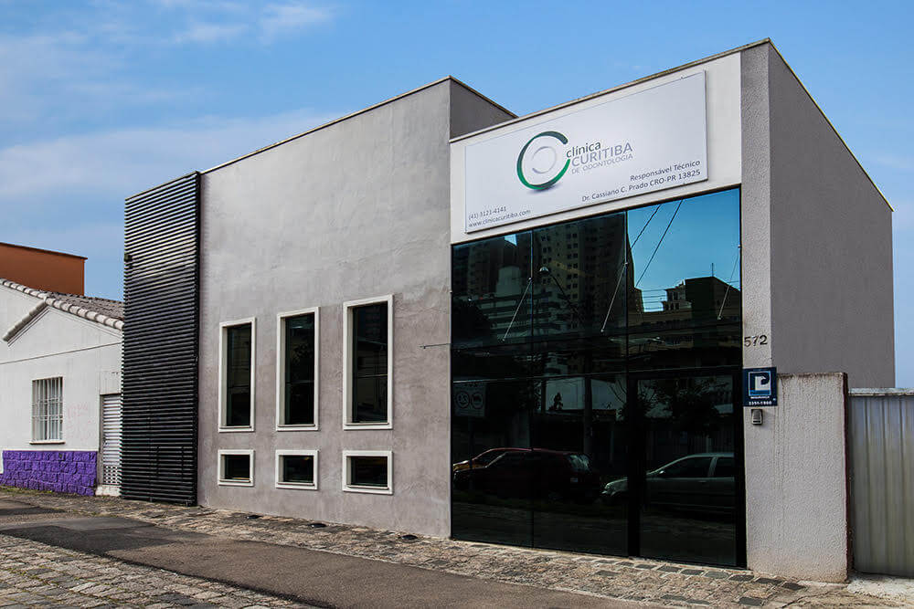

Beleza e
saúde juntos.
Cuidado odontológico fundamentado em ciência, ética, competência e agilidade — para você escolher o próximo passo com clareza.
Estacionamento próprio

desde o primeiro encontro
que procura
a clínica
mais claro
Uma clínica para cuidar
do todo, com atenção aos detalhes.
CAMINHOS DE CUIDADO
O que você
precisa hoje?
Conheça as áreas de atendimento da Clínica Curitiba e encontre o ponto de partida para sua conversa.
Implantes dentais
Para recuperar função e segurança no sorriso.
Conversar sobre esta área ↗Próteses
Uma opção de cuidado para diferentes necessidades.
Saiba mais ↗ EstéticaDentística
Beleza e saúde juntos no cuidado com os dentes.
Saiba mais ↗ SaúdePeriodontia
Atenção especializada à saúde da gengiva.
Saiba mais ↗Endodontia
Saiba mais ↗ATENTA MUDA
O CUIDADO.
A CLÍNICA CURITIBA
Conhecimento que
acolhe cada história.
Na Clínica Curitiba de Odontologia, o cuidado é fundamentado em ciência e ética, com competência e agilidade nos serviços.
Um jeito prático e humano de olhar para a saúde — sem perder de vista a beleza de um sorriso.
SEU PRÓXIMO PASSO
Vamos conversar
sobre seu sorriso?
Rua Dr. Alexandre Gutierrez, 572
Água Verde · Curitiba/PR
CEP 80240-130
Estacionamento
próprio